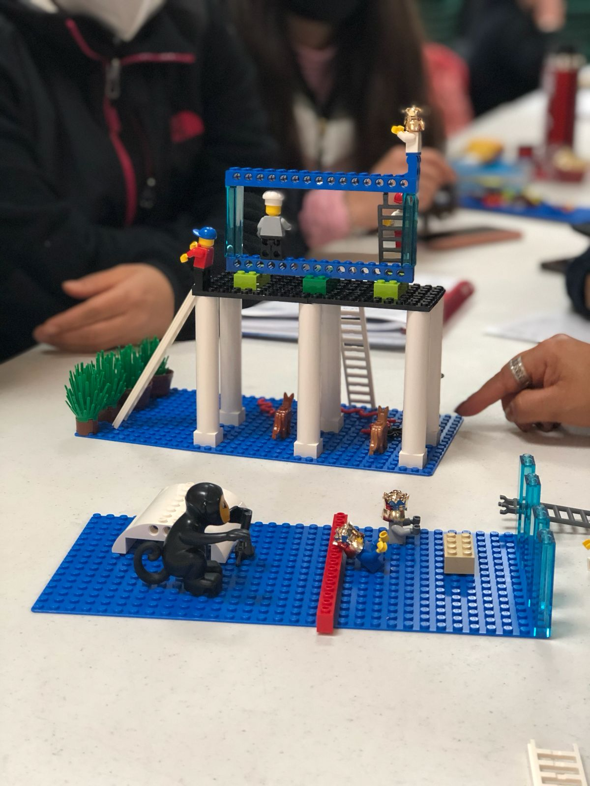
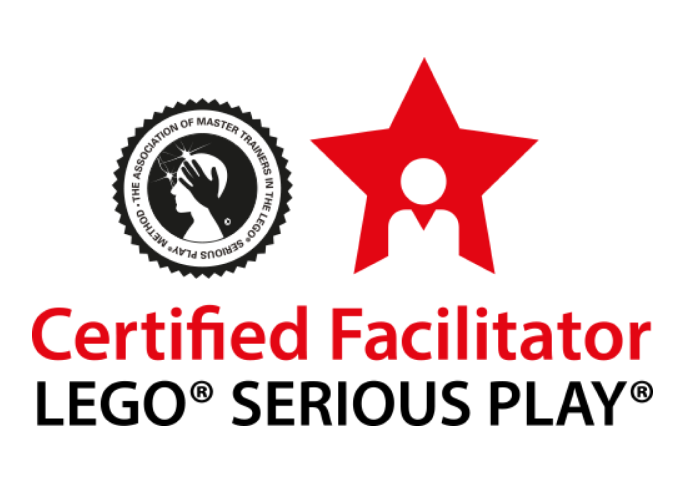
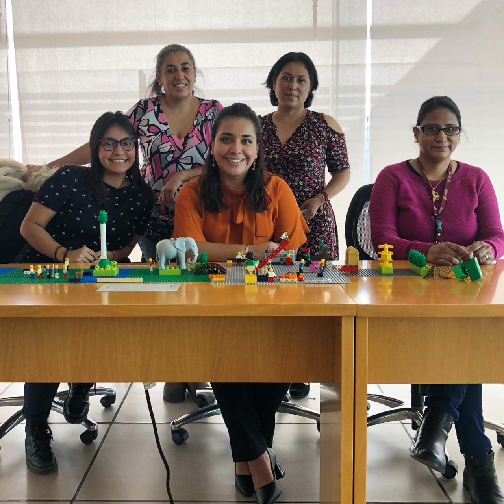
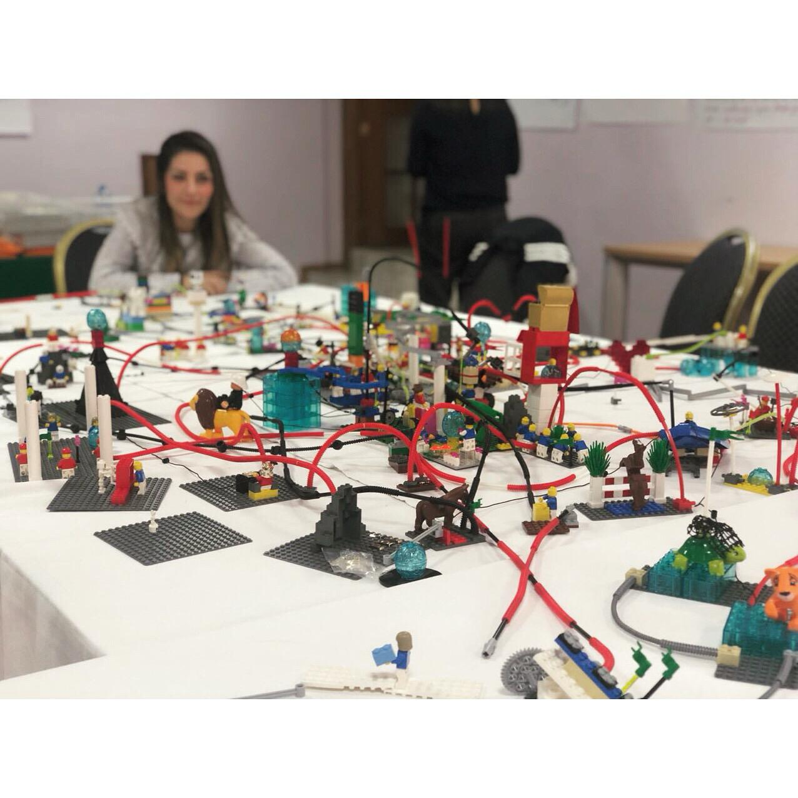
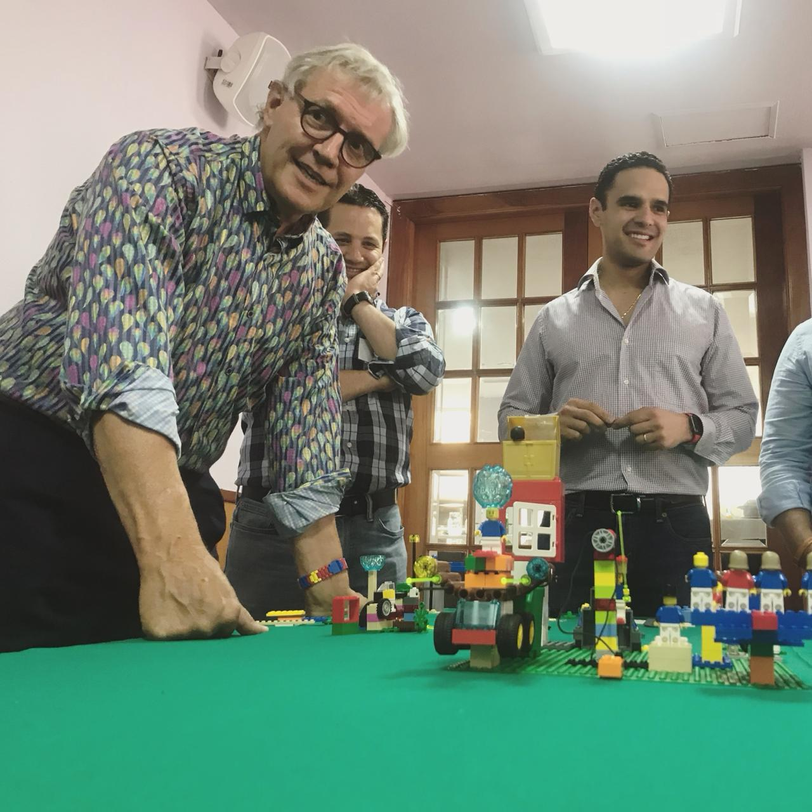

LEGO® Serious Play® by co.lmena
Hay conversaciones que necesitan algo más que sentarse alrededor de una mesa.
LEGO® Serious Play® es una metodología de facilitación que permite pensar, expresar y construir ideas a través de modelos tridimensionales. En co.lmena la utilizamos cuando un reto necesita hacer visibles perspectivas distintas, construir entendimiento compartido y abrir conversaciones que no siempre aparecen mediante los formatos tradicionales.


Pensar con las manos para conversar de otra manera.
LEGO® Serious Play® es una metodología basada en aprendizaje experiencial y construcción de conocimiento que utiliza piezas LEGO® como medio para pensar, representar ideas y compartir perspectivas. Cada persona construye, explica y participa.
Esto permite que la conversación no quede concentrada en las voces más dominantes del equipo y que conceptos abstractos puedan hacerse visibles, compartirse y discutirse.
No construimos para jugar. Construimos para pensar.
Por qué la usamos
Build with People también significa construir con las personasco.lmena no utiliza LEGO® Serious Play® como una actividad aislada ni como entretenimiento corporativo. La utilizamos cuando es la herramienta adecuada para el problema que necesitamos trabajar:
Elegimos la herramienta a partir del reto. Nunca el reto a partir de la herramienta.
Cuándo la utilizamos
Conversaciones que habilita
Cultura
- valores vividos
- cultura deseada
- propósito
- comportamientos
- identidad organizacional
Equipos
- alineación y colaboración
- confianza
- comunicación
- acuerdos de trabajo
- integración
Liderazgo
- identidad como líder
- comportamientos
- relación líder–equipo
- expectativas
- cambio
Estrategia
- visión compartida
- prioridades
- escenarios
- decisiones
- retos complejos
Cambio
- nuevas formas de trabajar
- reestructuras
- integración
- adaptación
Innovación
- generación de ideas
- resolución de problemas
- exploración de alternativas
LEGO® Serious Play® puede incorporarse dentro de Diagnóstico, Transformación o Institucionalización, y también como herramienta dentro de un co. Alignment Review cuando necesitamos explorar participativamente cómo las personas interpretan la cultura y la operación actual o futura.
Formatos
la metodología se adapta a la conversación, no al revésPara una pregunta o reto específico. Duración orientativa: 4–8 horas.
Para revisar o redefinir colaboración, comunicación, roles, expectativas, identidad y acuerdos de trabajo.
Para trabajar visión, prioridades, escenarios, decisiones y retos complejos.
Para explorar quiénes somos, qué queremos preservar, qué necesita cambiar y qué cultura necesita la siguiente etapa.
Diseñamos sesiones alrededor del reto específico de la organización; la metodología se adapta a la conversación, no al revés.
LSP Journey
Una buena sesión no termina con una mesa llena de modelos. Termina con una organización que entiende algo que antes no podía ver con la misma claridad.
Qué incluye la experiencia



Integrar dos áreas en un solo equipo
Contexto
En un instituto científico, dos áreas que habían sido integradas necesitaban comenzar a funcionar como un solo equipo. Aunque formalmente ya compartían estructura y objetivos, en la práctica seguían operando desde formas de trabajo distintas, construidas antes de la fusión.
Tensión
El reto no era únicamente mejorar la comunicación. Cada grupo llegaba con sus propios hábitos, criterios, dinámicas y maneras de resolver el trabajo. Esa diferencia dificultaba la coordinación y había impedido que la nueva área funcionara de manera verdaderamente integrada.
Intervención
Se diseñó una sesión con LEGO® Serious Play® para hacer visibles las distintas perspectivas sobre cómo estaba funcionando el equipo, reconocer las diferencias heredadas de cada área y construir una representación compartida de cómo necesitaban trabajar juntos hacia adelante. La metodología permitió que todas las personas participaran en la conversación, expresaran elementos que no necesariamente aparecían en una discusión tradicional y comenzaran a construir lenguaje y acuerdos comunes. LEGO® Serious Play® permitió crear un espacio para empezar a construir esa nueva forma compartida de operar.
Build with People.
A veces, la mejor manera de construir una conversación distinta es empezar construyendo algo juntos.